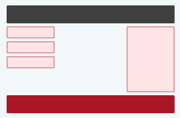
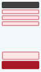
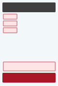

响应式网页设计 - 媒体查询
什么是媒体查询？
媒体查询是 CSS3 中引入的一种 CSS 技术。
仅在满足特定条件时，它才会使用 @media 规则来引用 CSS 属性块。
实例
如果浏览器窗口是 600px 或更小，则背景颜色为浅蓝色：
@media only screen and (max-width: 600px) {
body {
background-color: lightblue;
}
}
添加断点
在本教程中稍早前，我们制作了一张包含行和列的网页，但是这张响应式网页在小屏幕上看起来效果并不好。
媒体查询可以帮助您。我们可以添加一个断点，其中设计的某些部分在断点的每一侧会表现得有所不同。

桌面电脑

手机
使用媒体查询在 768px 处添加断点：
实例
当屏幕（浏览器窗口）小于 768px 时，每列的宽度应为 100％：
/* 针对桌面设备： */
.col-1 {width: 8.33%;}
.col-2 {width: 16.66%;}
.col-3 {width: 25%;}
.col-4 {width: 33.33%;}
.col-5 {width: 41.66%;}
.col-6 {width: 50%;}
.col-7 {width: 58.33%;}
.col-8 {width: 66.66%;}
.col-9 {width: 75%;}
.col-10 {width: 83.33%;}
.col-11 {width: 91.66%;}
.col-12 {width: 100%;}
@media only screen and (max-width: 768px) {
/* 针对手机： */
[class*="col-"] {
width: 100%;
}
}
始终移动优先设计
移动优先（Mobile First）指的是在对台式机或任何其他设备进行设计之前，优先针对移动设备进行设计（这将使页面在较小的设备上显示得更快）。
这意味着我们必须在 CSS 中做一些改进。
当宽度小于 768px 时，我们应该修改设计，而不是更改宽度。我们就这样进行了“移动优先”的设计：
实例
/* 针对手机： */
[class*="col-"] {
width: 100%;
}
@media only screen and (min-width: 768px) {
/* 针对桌面： */
.col-1 {width: 8.33%;}
.col-2 {width: 16.66%;}
.col-3 {width: 25%;}
.col-4 {width: 33.33%;}
.col-5 {width: 41.66%;}
.col-6 {width: 50%;}
.col-7 {width: 58.33%;}
.col-8 {width: 66.66%;}
.col-9 {width: 75%;}
.col-10 {width: 83.33%;}
.col-11 {width: 91.66%;}
.col-12 {width: 100%;}
}
另一个断点
您可以添加任意多个断点。
我们还会在平板电脑和手机之间插入一个断点。
桌面电脑

平板电脑
手机
为此，我们添加了一个媒体查询（在 600 像素），并为大于 600 像素（但小于 768 像素）的设备添加了一组新类：
实例
请注意，两组类几乎相同，唯一的区别是名称（col- 和 col-s-）：
/* 针对手机： */
[class*="col-"] {
width: 100%;
}
@media only screen and (min-width: 600px) {
/* 针对平板电脑： */
.col-s-1 {width: 8.33%;}
.col-s-2 {width: 16.66%;}
.col-s-3 {width: 25%;}
.col-s-4 {width: 33.33%;}
.col-s-5 {width: 41.66%;}
.col-s-6 {width: 50%;}
.col-s-7 {width: 58.33%;}
.col-s-8 {width: 66.66%;}
.col-s-9 {width: 75%;}
.col-s-10 {width: 83.33%;}
.col-s-11 {width: 91.66%;}
.col-s-12 {width: 100%;}
}
@media only screen and (min-width: 768px) {
/* 针对桌面： */
.col-1 {width: 8.33%;}
.col-2 {width: 16.66%;}
.col-3 {width: 25%;}
.col-4 {width: 33.33%;}
.col-5 {width: 41.66%;}
.col-6 {width: 50%;}
.col-7 {width: 58.33%;}
.col-8 {width: 66.66%;}
.col-9 {width: 75%;}
.col-10 {width: 83.33%;}
.col-11 {width: 91.66%;}
.col-12 {width: 100%;}
}
有两组相同的类似乎很奇怪，但是它给了我们机会用 HTML 来决定在每个断点处的列会发生什么：
HTML 实例
对于台式机：
第一和第三部分都会跨越 3 列。中间部分将跨越 6 列。
对于平板电脑：
第一部分将跨越 3 列，第二部分将跨越 9 列，第三部分将显示在前两部分的下方，并将跨越 12 列：
<div class="row"> <div class="col-3 col-s-3">...</div> <div class="col-6 col-s-9">...</div> <div class="col-3 col-s-12">...</div> </div>
典型的设备断点
高度和宽度不同的屏幕和设备不计其数，因此很难为每个设备创建精确的断点。为了简单起见，您可以瞄准这五组：
实例
/* 超小型设备（电话，600px 及以下） */
@media only screen and (max-width: 600px) {...}
/* 小型设备（纵向平板电脑和大型手机，600 像素及以上） */
@media only screen and (min-width: 600px) {...}
/* 中型设备（横向平板电脑，768 像素及以上） */
@media only screen and (min-width: 768px) {...}
/* 大型设备（笔记本电脑/台式机，992px 及以上） */
@media only screen and (min-width: 992px) {...}
/* 超大型设备（大型笔记本电脑和台式机，1200px 及以上） */
@media only screen and (min-width: 1200px) {...}
方向：人像 / 风景
媒体查询还可用于根据浏览器的方向来更改页面的布局。
您可以设置一组 CSS 属性，这些属性仅在浏览器窗口的宽度大于其高度时才适用，即所谓的“横屏”方向：
实例
如果方向为横向模式（landscape mode），则网页背景为浅蓝色：
@media only screen and (orientation: landscape) {
body {
background-color: lightblue;
}
}
用媒体查询隐藏元素
媒体查询的另一种常见用法是在不同屏幕尺寸上对元素进行隐藏：
实例
/* 如果屏幕尺寸为 600 像素或更小，请隐藏该元素 */
@media only screen and (max-width: 600px) {
div.example {
display: none;
}
}
用媒体查询修改字体
您还可以使用媒体查询来更改不同屏幕尺寸上的元素的字体大小：
实例
/* 如果屏幕尺寸为 601px 或更大，请将 <div> 的 font-size 设置为 80px */
@media only screen and (min-width: 601px) {
div.example {
font-size: 80px;
}
}
/* 如果屏幕尺寸为 600px 或更小，请将 <div> 的 font-size 设置为 30px */
@media only screen and (max-width: 600px) {
div.example {
font-size: 30px;
}
}
CSS @media 参考手册
有关所有媒体类型和特性/表达式的完整概述，请在 CSS 参考手册中参阅 @media 规则。